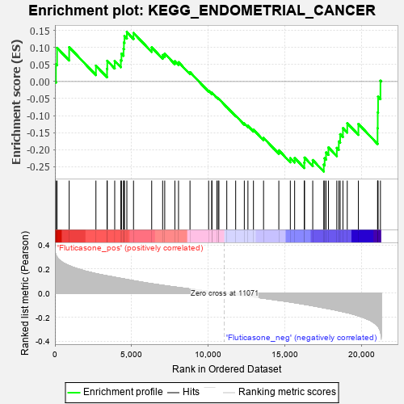
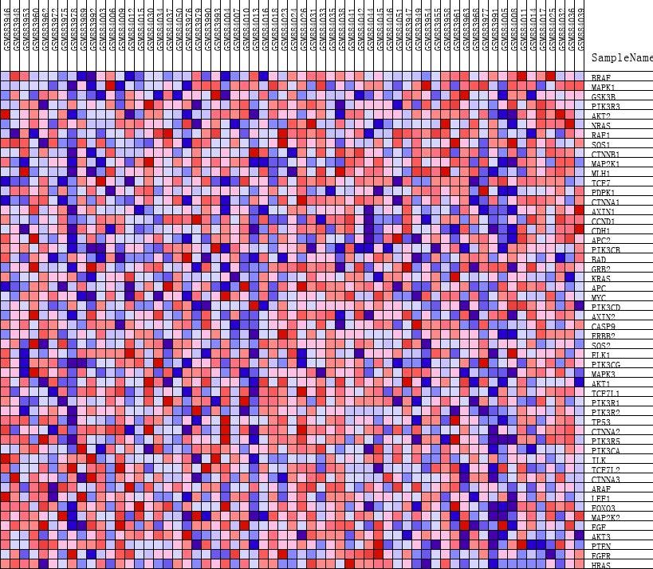
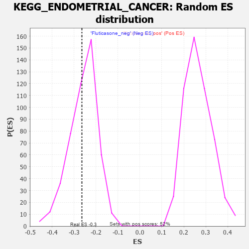

| | | Dataset | GSEA_expr_Flu.GSEA_timepoint.cls#Fluticasone |
| Phenotype | GSEA_timepoint.cls#Fluticasone |
| Upregulated in class | Fluticasone_neg |
| GeneSet | KEGG_ENDOMETRIAL_CANCER |
| Enrichment Score (ES) | -0.26455986 |
| Normalized Enrichment Score (NES) | -1.026559 |
| Nominal p-value | 0.39748955 |
| FDR q-value | 1.0 |
| FWER p-Value | 0.984 |
Table: GSEA Results Summary

Fig 1: Enrichment plot: KEGG_ENDOMETRIAL_CANCER
Profile of the Running ES Score & Positions of GeneSet Members on the Rank Ordered List
| PROBE | DESCRIPTION
(from dataset) | GENE SYMBOL | GENE_TITLE | RANK IN GENE LIST | RANK METRIC SCORE | RUNNING ES | CORE ENRICHMENT | | 1 | BRAF | NA | | | 64 | 0.316 | 0.0512 | No |
| 2 | MAPK1 | NA | | | 138 | 0.300 | 0.0991 | No |
| 3 | GSK3B | NA | | | 929 | 0.228 | 0.1010 | No |
| 4 | PIK3R3 | NA | | | 2676 | 0.162 | 0.0467 | No |
| 5 | AKT2 | NA | | | 3402 | 0.144 | 0.0372 | No |
| 6 | NRAS | NA | | | 3417 | 0.143 | 0.0611 | No |
| 7 | RAF1 | NA | | | 3903 | 0.132 | 0.0608 | No |
| 8 | SOS1 | NA | | | 4304 | 0.122 | 0.0630 | No |
| 9 | CTNNB1 | NA | | | 4345 | 0.121 | 0.0819 | No |
| 10 | MAP2K1 | NA | | | 4480 | 0.118 | 0.0959 | No |
| 11 | MLH1 | NA | | | 4504 | 0.118 | 0.1150 | No |
| 12 | TCF7 | NA | | | 4539 | 0.117 | 0.1334 | No |
| 13 | PDPK1 | NA | | | 4696 | 0.113 | 0.1455 | No |
| 14 | CTNNA1 | NA | | | 5131 | 0.103 | 0.1428 | No |
| 15 | AXIN1 | NA | | | 6318 | 0.078 | 0.1004 | No |
| 16 | CCND1 | NA | | | 7033 | 0.065 | 0.0780 | No |
| 17 | CDH1 | NA | | | 7169 | 0.062 | 0.0823 | No |
| 18 | APC2 | NA | | | 7832 | 0.051 | 0.0599 | No |
| 19 | PIK3CB | NA | | | 8070 | 0.047 | 0.0568 | No |
| 20 | BAD | NA | | | 8819 | 0.035 | 0.0276 | No |
| 21 | GRB2 | NA | | | 10036 | 0.015 | -0.0270 | No |
| 22 | KRAS | NA | | | 10243 | 0.012 | -0.0346 | No |
| 23 | APC | NA | | | 10245 | 0.012 | -0.0326 | No |
| 24 | MYC | NA | | | 10570 | 0.007 | -0.0466 | No |
| 25 | PIK3CD | NA | | | 10661 | 0.006 | -0.0498 | No |
| 26 | AXIN2 | NA | | | 10707 | 0.005 | -0.0510 | No |
| 27 | CASP9 | NA | | | 11221 | -0.002 | -0.0748 | No |
| 28 | ERBB2 | NA | | | 11802 | -0.011 | -0.1001 | No |
| 29 | SOS2 | NA | | | 12366 | -0.021 | -0.1231 | No |
| 30 | ELK1 | NA | | | 12602 | -0.024 | -0.1300 | No |
| 31 | PIK3CG | NA | | | 12963 | -0.031 | -0.1416 | No |
| 32 | MAPK3 | NA | | | 13622 | -0.042 | -0.1654 | No |
| 33 | AKT1 | NA | | | 14620 | -0.060 | -0.2021 | No |
| 34 | TCF7L1 | NA | | | 15370 | -0.073 | -0.2248 | No |
| 35 | PIK3R1 | NA | | | 15652 | -0.079 | -0.2246 | No |
| 36 | PIK3R2 | NA | | | 16280 | -0.092 | -0.2383 | No |
| 37 | TP53 | NA | | | 16300 | -0.092 | -0.2234 | No |
| 38 | CTNNA2 | NA | | | 16834 | -0.104 | -0.2307 | No |
| 39 | PIK3R5 | NA | | | 17555 | -0.121 | -0.2438 | Yes |
| 40 | PIK3CA | NA | | | 17611 | -0.123 | -0.2254 | Yes |
| 41 | ILK | NA | | | 17703 | -0.125 | -0.2083 | Yes |
| 42 | TCF7L2 | NA | | | 17859 | -0.128 | -0.1936 | Yes |
| 43 | CTNNA3 | NA | | | 18406 | -0.142 | -0.1949 | Yes |
| 44 | ARAF | NA | | | 18536 | -0.146 | -0.1760 | Yes |
| 45 | LEF1 | NA | | | 18625 | -0.148 | -0.1547 | Yes |
| 46 | FOXO3 | NA | | | 18805 | -0.153 | -0.1368 | Yes |
| 47 | MAP2K2 | NA | | | 19088 | -0.161 | -0.1224 | Yes |
| 48 | EGF | NA | | | 19815 | -0.187 | -0.1245 | Yes |
| 49 | AKT3 | NA | | | 21067 | -0.271 | -0.1370 | Yes |
| 50 | PTEN | NA | | | 21079 | -0.272 | -0.0908 | Yes |
| 51 | EGFR | NA | | | 21101 | -0.276 | -0.0445 | Yes |
| 52 | HRAS | NA | | | 21255 | -0.316 | 0.0024 | Yes |
Table: GSEA details [plain text format]

Fig 2: KEGG_ENDOMETRIAL_CANCER
Blue-Pink O' Gram in the Space of the Analyzed GeneSet

Fig 3: KEGG_ENDOMETRIAL_CANCER: Random ES distribution
Gene set null distribution of ES for KEGG_ENDOMETRIAL_CANCER